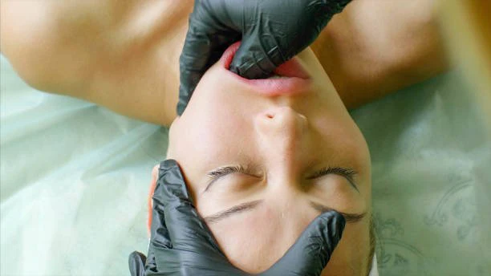

BUCCAL MASSAGE IS HERE!

Hadiyah Daché, licensed cosmetologist & esthetician
Facials & Treatments
2 min
← All articlesThe Book →Friendly reminder: this post contains affiliate links, which help support the Glowdega Archive. If you buy through them, I may earn a commission at no extra cost to you.
We know those monthly GLOWDEGA® visits are seen as a stress reliever to our many members. And we love that we've been able to be that for you BUT with our latest service on the menu, we just know that you'll have the ultimate relaxation haven now.
Introducing: Buccal Massage! The latest indulgence available at GLOWDEGA® is a facial that uniquely blends relaxation and rejuvenation with our expert skin care techniques. This distinctive facial treatment is designed to lift, tone, and sculpt the face from the inside out, offering results that are both immediate and long-lasting. How? It's a little bit of magic and dash of our expert technique. Buccal massage involves a thorough massage of the facial muscles from both inside the mouth and on the outside of the face. This dual approach allows for increased circulation, lymphatic drainage, and relief of muscle tension. The result? A visibly more sculpted, vibrant complexion that not only looks natural but feels revitalized.
BOOK NOW: DAY GLOW W/ BUCCAL MASSAGE
We couldn't wait to be able to launch this for you! Experience the transformative effects of our stress-relieving facial, skillfully designed to enhance both your skin and overall well-being. Through expert massage techniques, this luxurious treatment offers a multitude of benefits. It releases tension and eases pain in the neck, head, and face, which are often burdened by tight and tired muscles. By promoting lymphatic drainage, it effectively reduces puffiness and swelling, helping to clear away stagnant fluid and refresh your complexion. Additionally, the increased blood circulation invigorates your skin, promoting a healthy glow while naturally diminishing fine lines and wrinkles.
This is available to book as of today and is suitable for most members except those with active oral/skin disorders including acne and cold sores, thyroid disease, recent botox/filler injections (within last 5 weeks), and anyone currently undergoing oncology treatment.
We invite you to be among the first to experience the transformative effects of our buccal massage facial. Whether you’re preparing for a special event, seeking to undo the effects of stress on your skin, or simply looking to indulge in a luxurious, health-promoting facial treatment, our buccal massage facial is the perfect choice. Come, let us pamper you and reveal the best in your skin and spirit! Join us at our spa, where your journey to radiance and relaxation awaits.